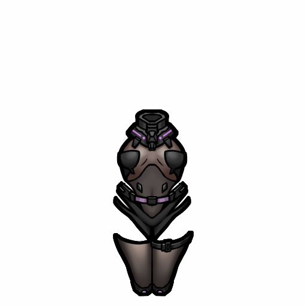
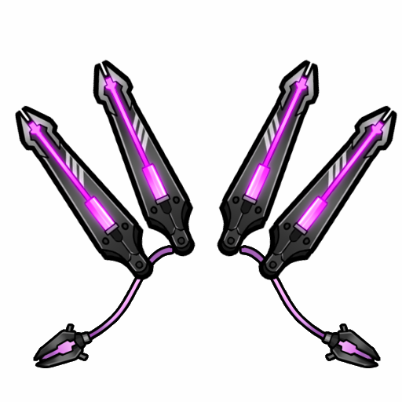

魅狐机械师服装Kurin_OnSkin_Mechanic_Clothing

Apparel/OnSkin/Mechanic_Clothing/Mechanic_Clothing
护甲 1.1/1.1/1.3 · 重 1.6
魅狐机械师的专属服装，用来加魅狐机械师对机械体的控制。
Kurin_OnSkin_Mechanic_Clothing
Apparel/OnSkin/Mechanic_Clothing/Mechanic_Clothing
护甲 1.1/1.1/1.3 · 重 1.6
魅狐机械师的专属服装，用来加魅狐机械师对机械体的控制。
Kurin_Portable_Bandwidth_Node
Apparel/Others/Portable_Bandwidth_Node
重 0.3 · 层 Belt · 科研 BasicMechtech
一个便携式魅狐带宽节点，用于增加魅狐机械师的带宽，并增强其能力。
Kurin_Overhead_Mechanic_GogglesApparel/Overhead/Mechanic_Goggles/Mechanic_Goggles
护甲 0.3/0.3/0.4 · 重 1.1 · 层 Overhead
一个用于加强魅狐机械师的护目镜。